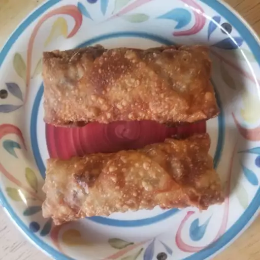

Beef Egg Rolls

Crispy fried egg rolls stuffed with ground beef, cabbage, and delicious seasonings. A personal creation of mine that goes well with any Chinese dish. The sherry makes it better.
Ingredients
- 1 pound lean ground beef
- onion, thinly sliced
-
½ teaspoon dried minced garlic
-
2 tablespoons soy sauce
-
½ teaspoon salt
-
½ teaspoon ground black pepper
-
2 tablespoons sherry
-
1 teaspoon ground ginger
-
1 large head cabbage, finely shredded
-
¼ cup water
-
1 tablespoon vegetable oil
-
1 teaspoon white sugar
-
2 tablespoons soy sauce
- 2 tablespoons sherry
- ½ teaspoon salt
- ½ teaspoon ground black pepper
- 2 quarts vegetable oil for deep frying
- 1 (16 ounce) package egg roll wrappers
Directions
- In a large skillet over medium-high heat, brown beef, then mix in onion, garlic, 2 tablespoons soy sauce, 1/2 teaspoon salt, 1/2 teaspoon pepper, 2 tablespoons sherry, and ginger. Continue to saute just until onions are tender. Transfer mixture to a bowl and set aside.
- In the same skillet, saute cabbage with water, 1 tablespoon oil, sugar, and remaining soy sauce, sherry, salt, and pepper. Continue to saute until cabbage is crisp-tender, about 5 minutes. Return meat mixture to pan and stir together with cabbage over low heat until heated through. Remove from heat.
- Pour oil into a deep pan and heat to 350 degrees F (175 degrees C). Fill each egg roll wrapper with approximately 1/4 cup of filling and roll up according to package directions. Fry in preheated oil until golden brown. Drain on paper towels and serve hot.